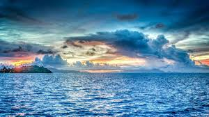

地球在46億年前誕生時，原是高溫的。在地球表面逐漸冷卻時，由地球內部釋出許多水蒸氣到原始大氣，水蒸氣凝結降雨，匯集到地表低窪處，累積形成海洋。海洋占地球表面的十分之七。因著海洋，從外太空看地球有如一顆美麗的藍寶石。 原始大氣中的甲烷、氨、硫化氫、氫和水蒸氣這些成分，因著太陽輻射和閃電供給能量，合成為簡單的有機物如單糖和氨基酸等。這些簡單物質溶入當時高溫的海水，再進一步組合成複雜的有機物，更進一步在海洋中形成原始的生命。 原始的大氣中並沒有氧氣，直到海洋中出現藻類，行光合作用，釋出氧氣到大氣中。氧氣在大氣中累積，逐漸形成臭氧，吸收了陽光中大多數的紫外線，這時，生物才開始離開海洋，登上陸地。直到今日，地球上絕大多數的光合作用是由海洋中的藻類來完成的。 此外，地球上97%的水是聚集在海洋。海洋的平均深度和玉山的高度一樣。海水經太陽輻射蒸發成水蒸氣，在空中凝結成雲，經過降水重回地面，部分雨水滲入地下成為地下水，部分雨水形成地表水，沿著地表由高處向低處流。有些地下水以泉水或井水的形式流出地表，和地表水匯集形成河流。
海洋酸化威脅漁業生態：海洋酸化主要指海水吸收大氣中的二氧化碳後，發生反應形成碳酸從而導致海水酸度增加。自然狀態下海水呈弱鹼性，目前二氧化碳溶解到海水中的速度已超出了海洋的自我淨化能力，海水 PH 值明顯降低。海洋酸化的加劇，使得珊瑚、貝類、九孔蟲等的鈣化作用降低，不利具鈣質骨骼的生物生存，使得海洋生態系統面臨崩潰的威脅。海水酸化對生態會造成珊瑚消失、生物滅絕等影響；海水酸化對人類的影響則是因海中生物鏈破壞造成漁貨量下降、珊瑚死亡造成觀光收益下降、全球暖化、雨水分配不均、全球糧食產量銳減，造成物價上漲。
（二）全球氣候暖化衝擊海洋生態：海洋生物可分為浮游生物、游泳生物及底棲生物 3 大類，因應氣候變遷的對策可分為兩種：一是原地不動忍受它；一是遷徙逃避。浮游生物游泳能力有限，無法抵抗水流，但世代短，可透過基因改變而演化存活下來。游泳生物的移動能力強，遇到環境變遷可遷移到適合生活的地方。底棲生物住在海底，大部分無法移動或移動能力有限，主要靠釋放幼苗隨水漂流的方式移動，這類生物在環境變遷時最敏感，也最容易受傷害。
（三）海洋污染破壞海洋生態系統：海洋面積遼闊，儲水量巨大，長期以來是地球上最穩定的生態系統。然而近幾十年，隨著世界工業的發展，海洋的污染日趨嚴重，使局部海域環境發生了很大變化，並有繼續擴展的趨勢。海洋污染直接後果是海水的混濁，將嚴重影響海洋植物，如浮游植物和海藻的光合作用。此外，浮游生物的大量死亡也將使海洋吸收二氧化碳降低，在一定程度上也會加速溫室效應。工業廢水和生活廢水富含有機物排入海水達到一定程度後，極易發生某一種或某幾種浮游生物的爆發性繁殖或高度聚集，影響和危害其他海洋生物正常生存的災害性海洋生態異常現象（赤潮），造成海洋生物的大量死亡。更可怕的是被稱為「塑膠沙子」的塑膠分解物。由於我們使用的大多數塑膠製品並不能在自然環境中直接降解，其平均壽命會超過 500 年。隨著時間，它們會分解成越來越小的碎塊，而分子結構卻沒有任何改變。這些「塑膠沙子」表面上看起來與海洋動物的食物極為相似，一旦被吞食將無法消化、難以排泄，最終將導致魚類和海鳥因營養不良而死亡。
（四）過度捕撈導致漁業資源萎縮：根據 FAO最新的評估報告指出，全世界50%以上的漁業資源已完全開發或衰退狀態，其中25%以上過度開發，低度開發或適度開發狀態的不到25%。人類持續濫捕到了2048年，人類可能將無魚可吃。
